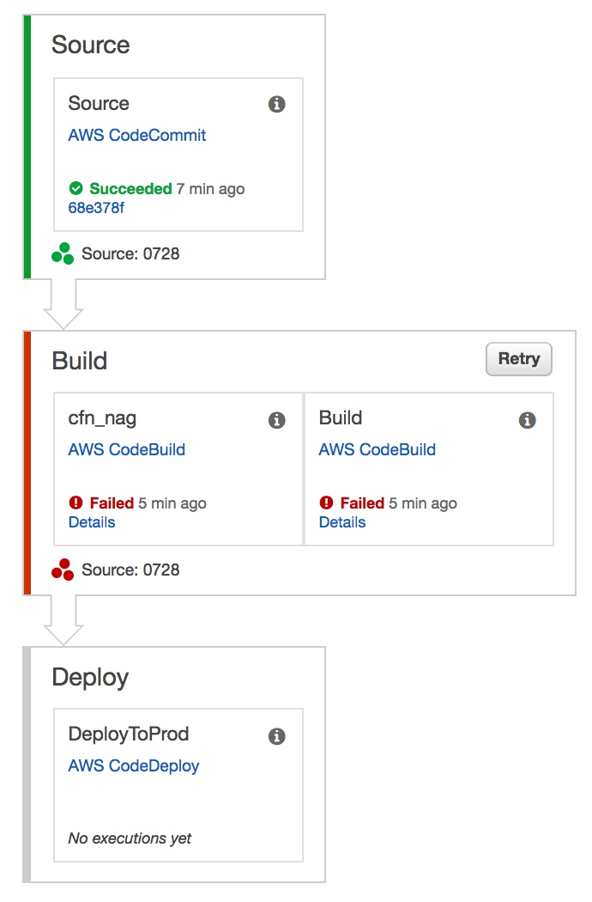
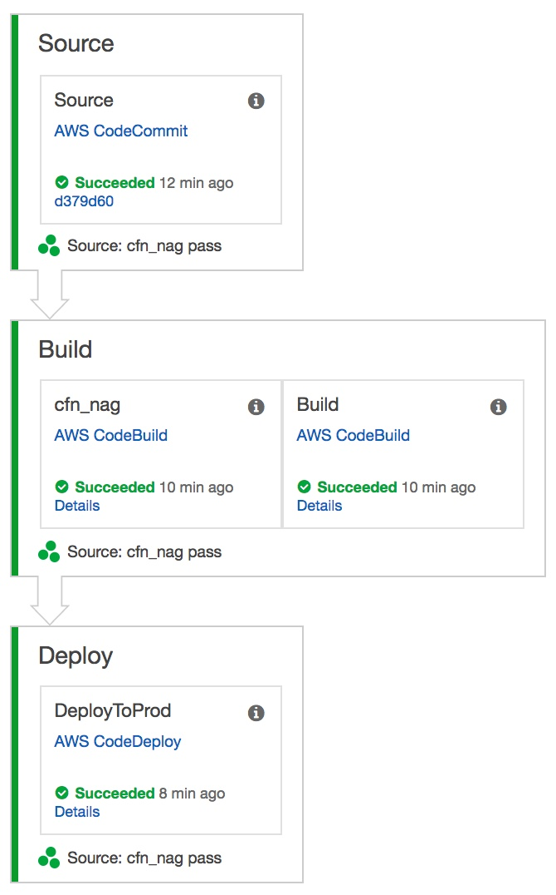

            <div class="main-body-div" id="main-box">
            <div class="container-fluid">
                <div class="row">
                    <div class="col-lg-12 col-xs-12">
                <!-- Main Body Content -->
                    <h2 class="page-title bg-primary">EC2: Deployment Pipeline </h2>
                   <!-- inner body -->


                 <div class="inner-body panel">
                    <h4 class="sub-heading">Deployment Pipeline for EC2 CodePipeline Stages</h4>    
                    <ul class="edited-ul">
                        <li><strong>Source</strong> - Poll the AWS CodeCommit version-control repository looking for changes and let CodePipeline securely store source artifacts in S3.</li>
                        <li><strong>Build</strong> - Uses CodeBuild to run static analysis and build the static S3 website</li>
                        <li><strong>Deploy</strong> - Deploy the static S3 website using AWS CodeDeploy</li>
                    </ul>
                 </div> 


                 <div class="inner-body panel">
                    <h4 class="sub-heading">Deployment Pipeline - Fail</h4>    
                    <div class="text-center"><a href="https://aws.amazon.com/codepipeline/"></a>
                    </div>
                    <ul class="edited-ul">
                            <li><strong>Static Analysis - buildspec.yml</strong> - <a href="https://github.com/stelligent/devops-essentials/blob/master/samples/ec2/buildspec.yml#LL7-LL9">cfn_nag from buildspec.yml</a>.</li>
                            <li><strong>Static Analysis - buildspec.yml</strong> - <a href="https://github.com/stelligent/devops-essentials/blob/master/samples/ec2/buildspec.yml#LL7-LL9">cfn_nag from buildspec.yml</a>.</li>
                        </ul>
                 </div> 


                 <div class="inner-body panel">
                    <h4 class="sub-heading">Deployment Pipeline - Pass</h4>    
                    <div class="text-center"><a href="https://aws.amazon.com/codepipeline/"></a>
                    </div>
                    <ul class="edited-ul">
                        <li><strong>Static Analysis - Fix</strong> - <a href="https://github.com/stelligent/devops-essentials/blob/master/samples/ec2/pipeline-cfn-nag-pass.json#LL90-LL104">cfn_nag pass</a>.</li>
                        </ul>
                 </div> 


